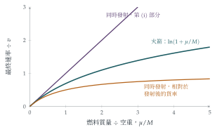

STEP III 2017，第 11 題
繼續之前，請先閱讀題目（原題為英文）。題目載於 STEP Support Programme 的題目資料庫： step.maths.org/questions/17-s3-q11
引子
太空中的火箭沒有任何東西可以借力。它靠把質量向後拋出而前進，其餘的就交給動量守恆（conservation of momentum）。一輛從車尾開炮的貨車，就是一枚拆成一塊塊的火箭：每枚拋射體（projectile）都是一團噴出的廢氣。
那麼，這些炮應該同時發射，還是逐一發射？這道題給出了明確的答案，但要看清楚它比較的是甚麼。同時發射會令貨車得到較大的速率，但也消耗較多能量，所以在兩種情況下，這些炮所做的並不是同一件事。只要改變保持不變的量，答案就會逆轉。把這一點弄清楚，便會引出太空飛行中最重要的方程——齊奧爾科夫斯基（Tsiolkovsky）的火箭方程（rocket equation），也會明白為甚麼真正的火箭要分成多級。
動筆之前
某一門炮發射之前，貨車以 \(V\) 行駛。發射之後，拋射體的速度是 \(V - v\)（即以速率 \(v - V\) 向後運動）。拋射體相對於發射前的貨車的速度是多少？
答案是 \((V - v) - V = -v\)。所以每門炮都以速率 \(v\) 把拋射體向後拋出，這個速率是相對於貨車在發射前一刻的速度而言的。這就是本題的固定規則；請牢記它，因為答案正是由它決定的。
逐步解題
階段 1 同時發射
系統最初靜止，動量為零。發射之後，貨車（質量為 \(M\)）以 \(u\) 向前運動，而 \(n\) 枚拋射體則以速率 \(v\) 向後運動（因為發射前 \(V = 0\)）。所以 \[Mu - nmv = 0, \qquad u = \frac{nmv}{M}.\] 所獲得的動能（kinetic energy）為 \[K = \tfrac12Mu^2 + \tfrac12nmv^2 = \tfrac12\frac{n^2m^2v^2}{M} + \tfrac12nmv^2 = \tfrac12nmv^2\Bigl(1 + \frac{nm}{M}\Bigr). \qed\]
階段 2 逐一發射
在第 \(r\) 門炮發射前的一刻，貨車連同餘下的拋射體的質量是多少？速率又是多少？寫出第 \(r\) 次發射的動量守恆式。
第 \(r\) 次發射之前，貨車載有 \(n - r + 1\) 枚拋射體，所以它的質量是 \(M + (n - r + 1)m\)，速率是 \(u_{r-1}\)。發射之後，載有 \(n - r\) 枚拋射體的貨車速率為 \(u_r\)，而射出的拋射體速度為 \(u_{r-1} - v\)。動量守恆： \[\bigl(M + (n - r + 1)m\bigr)u_{r-1} = \bigl(M + (n - r)m\bigr)u_r + m(u_{r-1} - v).\] 把含 \(mu_{r-1}\) 的項整理後，得 \(\bigl(M + (n - r)m\bigr)(u_r - u_{r-1}) = mv\)，這就是 \((*)\)。■
把各個增量相加， \[u_n = \sum_{r=1}^{n}\frac{mv}{M + (n - r)m} = \frac{mv}{M} + \frac{mv}{M + m} + \cdots + \frac{mv}{M + (n - 1)m}.\] 第一項之後的每一項都小於 \(\frac{mv}{M}\)，而且 \(n > 1\)，所以 \(u_n < \frac{nmv}{M} = u\)。■
為甚麼在這裏逐一發射的效果較差？第一門炮發射時，它要加速的不只是貨車，還有那 \(n - 1\) 枚未發射的拋射體，所以它帶來的速率增幅，比起作用在空車上時要小。
階段 3 能量的帳單
寫出第 \(r\) 次發射時動能的變化。\((*)\) 怎樣幫助你化簡含 \(u_r^2 - u_{r-1}^2\) 的那一項？
動能的變化為 \[K_r - K_{r-1} = \tfrac12\bigl(M + (n - r)m\bigr)u_r^2 + \tfrac12m(u_{r-1} - v)^2 - \tfrac12\bigl(M + (n - r + 1)m\bigr)u_{r-1}^2.\] 最後兩項合併成 \(\frac12m(v^2 - 2vu_{r-1}) - \frac12\bigl(M + (n - r)m\bigr)u_{r-1}^2\)。然後，把平方差因式分解，並利用 \((*)\)， \[\tfrac12\bigl(M + (n - r)m\bigr)(u_r^2 - u_{r-1}^2) = \tfrac12mv(u_r + u_{r-1}).\] 所以 \[K_r - K_{r-1} = \tfrac12mv(u_r + u_{r-1}) + \tfrac12mv^2 - mvu_{r-1} = \tfrac12mv^2 + \tfrac12mv(u_r - u_{r-1}). \qed\] 由 \(r = 1\) 加到 \(n\)，增量 \(u_r - u_{r-1}\) 逐項相消（telescope），餘下 \(u_n\)： \[K_n = \tfrac12nmv^2 + \tfrac12mvu_n. \qed\] 最後，\(K = \frac12nmv^2 + \frac12nmv^2\cdot\frac{nm}{M} = \frac12nmv^2 + \frac12mvu\)，而 \(u_n < u\)，所以 \(K_n < K\)。■
回顧
每一步都用動量。每次發射都是一個小型的二體問題：一邊是貨車連同所載的東西，另一邊是一枚拋射體。
裂項求和。\((*)\) 的增量和能量的增量都能乾淨利落地加起來。
仔細閱讀結論。同時發射得到較大的速率，但要付出較多能量。題目比較的是兩個做功多少並不相同的過程。
背後的數學
應該讓甚麼保持不變？
真正的炮或火箭引擎，是以相對於自身的固定速率拋出拋射體的，而這個速率是在拋射體剛離開之後量度的。本題的參照對象卻是貨車在發射之前的速率。對一枚細小的拋射體來說，兩者相差極微；但當 \(n\) 枚拋射體同時發射時，差別就很大：在第 (i) 部分，一大批沉重的拋射體以速率 \(v\) 被向後拋出，彷彿貨車完全沒有後座（recoil）一樣，這需要大量能量。
假如改為每枚拋射體都以相對於發射之後的貨車的速率 \(v\) 離開，結論就會逆轉。同時發射得 \(u = \frac{nmv}{M + nm}\)；逐一發射得 \(u_n = \sum_{k=1}^{n}\frac{mv}{M + km}\)，後者較大，因為每一項都至少是 \(\frac{mv}{M + nm}\)。這時逐一發射勝出：每枚拋射體都是從一輛已在運動的貨車上蹬出去的，而且越後發射的炮，要加速的質量越少。（請在練習中驗證這一點。）
火箭方程
現在讓拋射體變得極小而數目極多，並保持總質量 \(\mu = nm\) 不變：這就是一枚連續燃燒燃料的火箭。\(u_n\) 的和變成一個積分（兩種約定給出相同的極限）： \[u_n = \sum_{k=0}^{n-1}\frac{mv}{M + km} \;\to\; \int_0^{\mu}\frac{v\,\mathrm{d}s}{M + s} = v\ln\frac{M + \mu}{M}.\] 這就是齊奧爾科夫斯基火箭方程：若火箭噴出的廢氣以相對於火箭的速率 \(v\) 離開，火箭所增加的速率為 \[\Delta u = v\ln\frac{m_{\text{初}}}{m_{\text{末}}}.\] 圖 10.3.1 比較了這三個答案。麻煩就出在對數（logarithm）上：若排氣速率約為 \(4.5\) km/s（優良的化學燃料），要達到約 \(7.8\) km/s 的軌道速率，質量比必須是 \(e^{7.8/4.5} \approx 5.7\)；一旦把空氣阻力和重力計算在內，這個比值更接近 \(10\) 或以上。火箭幾乎全是燃料。

為甚麼火箭要分級
對數也解釋了分級（staging）的道理。火箭若在升空途中拋掉用完的燃料箱，就不必再加速這些無用的質量。各級所得的速率增量是相加的（就像那些炮一樣），而每一級的增量則取決於該級質量的比，所以把火箭分成多級，就能達到總質量相同的單級火箭無法達到的速率。把太空人送上月球的土星五號（Saturn V）有三級；它的第一級在不足三分鐘內燒掉約 \(2000\) 公噸燃料。
康斯坦丁．齊奧爾科夫斯基（Konstantin Tsiolkovsky）是俄羅斯外省小城卡盧加（Kaluga）一位失聰的教師，他在 1903 年一篇題為「利用反作用裝置探索外太空」的論文中發表了火箭方程。多級火箭、液態氫和液態氧燃料，以及太空站，他都一一推算過，比這些東西真正造得出來早了數十年。這條方程其實更早就在一些較不起眼的地方出現過（William Moore 在 1810 年已推導出其中一個版本），但齊奧爾科夫斯基是第一個看出它對太空飛行意味着甚麼的人。他寫道：「地球是人類的搖籃，但人不能永遠活在搖籃裏。」
思維技巧
連續的過程，往往可以理解為許多細小離散步驟的極限（limit）。先把離散的問題精確地解出來，再讓步長縮小：和就變成積分。
在這裏，\(n\) 門炮變成了一枚火箭，一個和變成了一個對數。到了大學，每逢推導物理定律，你都會見到同一手法：先分析一個微小的單元，再把結果加起來，成為一個積分或一條微分方程（differential equation）。
延伸練習
另一種約定。假設每枚拋射體都以相對於發射之後的貨車的速率 \(v\) 離開，重做第 (i) 和第 (ii) 部分。證明這時逐一發射所得的最終速率較大。
塵埃雲中的彗星。試做 STEP III 2009，第 11 題。它和火箭一樣是變質量（variable mass）問題，但彗星的質量是增加而不是減少。留意它的速率趨向甚麼值。
兩級火箭。一枚火箭的排氣速率為 \(v\)，空重為 \(M\)，燃料質量為 \(9M\)。求它的最終速率。現在把它分成兩級，每級的空重為 \(\frac12M\)，燃料為 \(4.5M\)，第一級在燃料用盡後拋掉。比較兩個最終速率。
不等式。在 \([0, x]\) 上把 \(\frac{1}{1 + s}\) 分別與 \(1\) 和 \(\frac{1}{1 + x}\) 比較，從而證明當 \(x \geq 0\) 時，\(\frac{x}{1 + x} \leq \ln(1 + x) \leq x\)。
延伸閱讀
Daniel Kleppner & Robert Kolenkow, An Introduction to Mechanics（Cambridge University Press），第 4 章。動量、變質量和火箭方程。
George Sutton & Oscar Biblarz, Rocket Propulsion Elements（Wiley）。工程學上的標準教科書；讀完本節後，開首幾章已可讀懂。
Hermann Oberth, Ways to Spaceflight（NASA 譯本，可在網上免費閱讀）。一位先驅的親身記述。